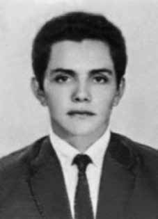

Zoé
Lucas
de Brito
Filho
CIRCUNSTÂNCIAS DA MORTE
Zoé Lucas foi morto no dia 28 de junho de 1972, em São Paulo (SP). De acordo com a versão oficial, seu corpo foi encontrado pela polícia sobre os trilhos em uma estação de trem (Tamanduateí).
Depoimentos de familiares tomados pela Comissão Estadual da Verdade de São Paulo “Rubens Paiva” contribuíram para elucidar melhor o caso. Segundo Edvaldo Valdir de Medeiros, última pessoa a falar com a vítima na noite do dia 27 de junho de 1972, Zoé havia saído de casa por volta das 11h30 em direção à Estação da Luz, de onde tomaria um trem com destino à Bolívia. Ele afirma que Zoé estava preocupado por estar sendo procurado e que em breve seria preso novamente. Por isso, iria fugir do país naquela noite.
Seu irmão mais velho, Manoel, foi avisado da morte de Zoé por telefone pela polícia, que dizia ter encontrado um papel no bolso de Zoé com o número de telefone de Manoel. Ele avisou seus primos que moravam em São Paulo e um deles, Egídio Alves de Medeiros, foi ao necrotério. Fez o reconhecimento do corpo, que encontrou com um afundamento na cabeça, com sinais de pancada, e o braço fraturado. A certidão de óbito foi assinada pelo médico-legista Sérgio Belmiro Acquesta, conhecido por assinar laudos médicos falsos nos casos de morte de militantes políticos.
No IML o corpo só foi liberado sob ordens expressas de manter o caixão lacrado. No velório, realizado na casa dos familiares, havia a presença de agentes policiais. O corpo foi sepultado na quadra 18, no terreno 439 do Cemitério de Vila Nova Cachoeirinha. Depois do enterro, os familiares foram convocados à 29ª Delegacia de São Paulo para prestar informações sobre Zoé. A família foi coagida a prestar informações de que ele teria viajado a trabalho, evitando assim maiores reprimendas dos agentes da repressão.
Em pesquisa realizada no Arquivo Nacional foi possível confirmar a informação de que Zoé estava prestes a ser preso novamente, pois havia sido condenado pela 7ª Auditoria da RM a dois anos de reclusão por atuação na ALN. Em documento do Serviço Nacional de Informação consta que, em março de 1976, ele era considerado foragido. No mesmo documento, um pedido de retificação de dados de janeiro de 1990 informa que faleceu em 28 de junho de 1972.
Zoé Lucas was killed on June 28, 1972, in São Paulo (SP). According to the official version, his body was found by the police on the tracks at a train station (Tamanduateí).
Testimonies from family members taken by the São Paulo State Truth Commission “Rubens Paiva” contributed to better clarifying the case. According to Edvaldo Valdir de Medeiros, the last person to speak to the victim on the night of June 27, 1972, Zoé had left home at around 11:30 am towards Estação da Luz, where she would take a train bound for Bolivia. He states that Zoé was worried about being wanted and that he would soon be arrested again. Therefore, he would flee the country that night.
His older brother, Manoel, was notified of Zoé's death by telephone by the police, who said they had found a paper in Zoé's pocket with Manoel's phone number. He informed his cousins who lived in São Paulo and one of them, Egídio Alves de Medeiros, went to the morgue. He recognized the body, which he found with a dent in the head, with signs of a blow, and a fractured arm. The death certificate was signed by coroner Sérgio Belmiro Acquesta, known for signing false medical reports in cases of death of political activists.
At the IML, the body was only released under express orders to keep the coffin sealed. At the wake, held at the family's home, there was the presence of police officers. The body was buried in block 18, on plot 439 of the Vila Nova Cachoeirinha Cemetery. After the burial, family members were summoned to the 29th Police Station of São Paulo to provide information about Zoé. The family was coerced into providing information that he had traveled for work, thus avoiding further reprimands from repression agents.
In research carried out at the National Archives, it was possible to confirm the information that Zoé was about to be arrested again, as he had been sentenced by the 7th RM Audit to two years in prison for his role in the ALN. A document from the National Information Service states that, in March 1976, he was considered a fugitive. In the same document, a request for data rectification from January 1990 states that he died on June 28, 1972.
Zoé Lucas fue asesinado el 28 de junio de 1972 en São Paulo (SP). Según la versión oficial, su cuerpo fue encontrado por policías en las vías de una estación de tren (Tamanduateí).
Los testimonios de familiares recogidos por la Comisión de la Verdad del Estado de São Paulo “Rubens Paiva” contribuyeron a esclarecer mejor el caso. Según Edvaldo Valdir de Medeiros, la última persona que habló con la víctima la noche del 27 de junio de 1972, Zoé había salido de su casa hacia las 11:30 horas hacia la Estação da Luz, donde tomaría un tren con destino a Bolivia. Afirma que a Zoé le preocupaba que lo buscaran y que pronto lo volverían a arrestar. Por tanto, huiría del país esa noche.
Su hermano mayor, Manoel, fue notificado por teléfono de la muerte de Zoé por la policía, quien dijo que había encontrado un papel en el bolsillo de Zoé con el número de teléfono de Manoel. Informó a sus primos que vivían en São Paulo y uno de ellos, Egídio Alves de Medeiros, fue a la morgue. Reconoció el cuerpo, que encontró con un golpe en la cabeza, con signos de golpe y un brazo fracturado. El certificado de defunción fue firmado por el médico forense Sérgio Belmiro Acquesta, conocido por firmar informes médicos falsos en casos de muerte de activistas políticos.
En el IML el cuerpo sólo fue liberado bajo órdenes expresas de mantener sellado el ataúd. En el velorio, celebrado en el domicilio de la familia, contó con la presencia de agentes policiales. El cuerpo fue enterrado en la cuadra 18, en la parcela 439 del Cementerio de Vila Nova Cachoeirinha. Luego del entierro, los familiares fueron citados a la Comisaría 29 de São Paulo para brindar información sobre Zoé. La familia fue obligada a proporcionar información de que había viajado por motivos de trabajo, evitando así nuevas amonestaciones por parte de los agentes represivos.
En investigaciones realizadas en el Archivo Nacional se pudo confirmar la información de que Zoé estaba a punto de ser detenido nuevamente, pues había sido condenado por la Auditoría 7ª RM a dos años de prisión por su papel en la ALN. Un documento del Servicio Nacional de Información afirma que, en marzo de 1976, era considerado prófugo. En el mismo documento, una solicitud de rectificación de datos de enero de 1990 señala que falleció el 28 de junio de 1972.